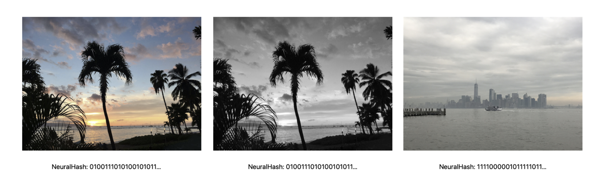
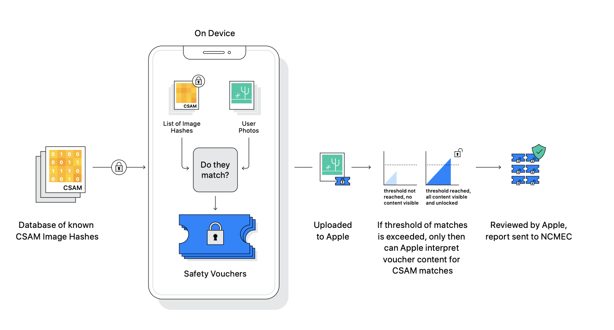
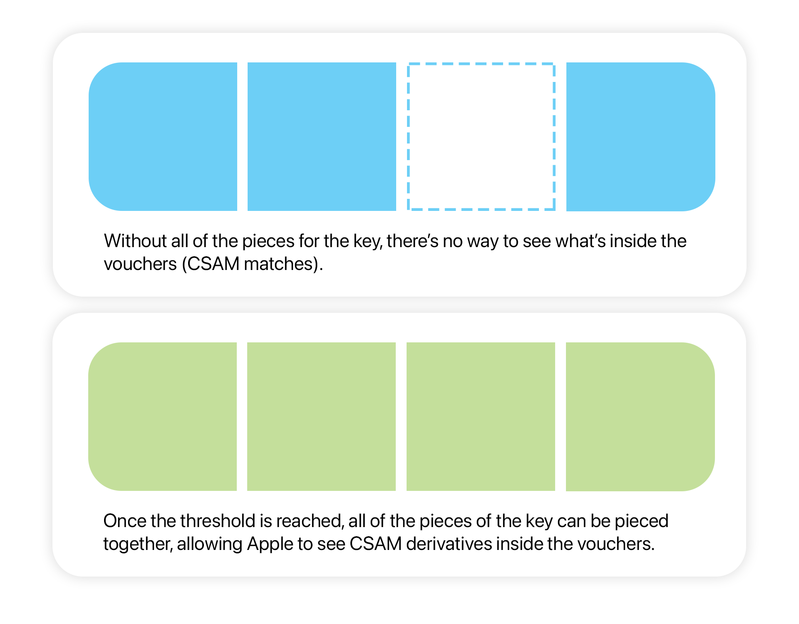

Why CSAM Detection on iPhone isn't all bad
Meeting in the middle in an online world.There has been a whole lot of controversy and, to an extent, media-fueled outrage at Apple’s quiet announcement of client-side scanning for CSAM material. Rightfully, many are scared at the idea that Apple is now looking through your library locally. Even more rightfully, many are angry that the company that preaches privacy is taking what is seemingly a step backward in protecting user privacy. No one wants their most personal devices scanned, especially when it contains the most intimate moments of their life. Pictures of your kids. Days out with family and friends. Pictures of the things most important to us.
I’ve spent the past few days reading people’s thoughts. And in some cases, I’ve engaged in discussion about this. The unfortunate reality is that Twitter, Reddit, and other social media websites make discourse hard, especially when talking about not-so-straight forward technology and their moral implications.
I have a contrasting set of opinions to much of the internet about CSAM scanning on iPhone. While I don’t necessarily expect to change your opinion, I do want to present my thoughts. I haven’t seen much representation of those who support such a system, and with that, I think it may be valuable to add a contrasting opinion against what seems to be the majority. All I ask is that you keep an open mind while reading this, and genuinely consider what this technology actually does and means.
For those who don’t know me (which is presumably anyone finding this article), I’ll start off with a little background. I’m Mark, and I’m an (almost) Computer Science graduate (I’m not quite done!) with an interest in AI, all things code, and wider CS. While I don’t think I’m an expert by any means, I have spent the better part of the past three years learning about these technologies, so I (hopefully!) have a tight enough grasp on the technologies Apple is implementing; at least, at a higher level.
One final thing before we jump in - I’m talking exclusively about the CSAM scanning feature, not the other child protection features, like iMessage Communication Safety (alerts about explicit imagery when received by minors in Messages).
So, in the words of Julie Andrews: let’s start at the very beginning, a very good place to start.
What even is CSAM?
CSAM, Child Sexual Abuse Material, refers is to known images of sexual child abuse. These images are reported to and stored by, in the US, the National Center For Missing & Exploited Children, the only body who is legally allowed to possess these images, for the purposes of identification and assisting law enforcement.
When most people talk about CSAM, they’re referring to a database of reported imagery of child abuse. The question then is how systems that detect and prevent the distribution of CSAM work. The logical solution would be to compare every image on the internet to the images in the database and flag those that match. Rather obviously, we soon enough realise that doing this means storing the images of the child abuse and distributing it to companies to check for in their own services. That’s not going to fly, since we don’t want these images in the hands of anyone else.
So what can we do? This is where a process called hashing comes in. Think of a hashing algorithm as a “black box” that you insert a photo to - a machine of sorts. What the hashing algorithm does is turn this image into a unique set of characters. We call this the hash. The useful thing about hashing is that it will produce a unique hash for every unique photo you put into it - that is to say, every photo you take will have a different hash, even if it’s of the same subject, like your car from two different angles. If you insert the same image into the machine, it’ll produce the same number, each and every time.
It’s essentially a fingerprint for your photo. Every photo has a unique fingerprint, and if you insert two different copies of the same photo, you’ll produce the same unique number for both of them, since they’re the same image.

"Original image on the left is nearly identical to the center image, so they have the same hash (fingerprint). The image of the right is different, so it has a different hash." Source: Apple
Important to note is that there’s also not enough information contained in this hash to go the other way; that is, you cannot insert a hash and get the photo back. The hash is an identifier, and it’s mathematically impossible to work backwards and turn a hash into the photo it was “made from”
How does this help us? Well, we no longer need to give out the prohibited images to Google, Apple, Microsoft, and anyone else who wants to check for this content on their servers. Instead, we generate hashes for each of the images of CSAM in The National Center for Missing & Exploited Children’s database, and store that in its own database.
Then, we can give Google, Apple, Microsoft, and anyone else this database. We can ask them to run through every image they have on their servers, and one-by-one use the “black box” hashing algorithm. We then see if the hash produced by each photo matches any hashes in the database. If it does, we know that image matches an image in the CSAM database, and thus it’s illegal imagery of child exploitation.
The actual implementation of NeuralHash is really interesting, and well worth reading if you have any interest or background in computer vision or artificial intelligence, like neural networks.
In this case, the company would likely then report the account to the authorities.
What we were able to do - without ever understanding what was in the pictures (ie, this is a photo of a car, this is a photo of a dog) - is find images that have been submitted to the CSAM database, while never even possessing the images of child exploitation. This is pretty great, since it means we can safely give out this database to big companies without fear of leaking images of sexual abuse, and let them find any copies of it on their server.
Throughout the rest of this article, I’ll just call this process scan/scanning for simplicity’s sake.
In fact, Google, Dropbox, Microsoft, and even iCloud, scan their databases for offending images regularly, using the process we spoke about above. In Apple’s case, they do this “out in the open” on their server, generating a hash for each image uploaded, and checking against the database they source from the Center.
Cool, so what’s been going on with Apple recently?
In essence, Apple announced that they were planning on moving this search that currently occurs on iCloud, and bringing it down to your iPhone. And clearly, the idea that Apple is now going to be scanning your photos on your device is concerning, and many media outlets communicated this. But I think there’s a lot of misunderstanding of what Apple is actually doing.
Let’s get this out of the way - Apple is not going to start scanning every image in your library. What Apple has proposed in their whitepapers is essentially moving the “black box” hashing algorithm down to your phone, generating the hash for each photo, and comparing it against the aforementioned database of CSAM hashes, before uploading to iCloud.
That is, only photos that are going to be uploaded to iCloud Photos are scanned. And, of course, you can turn off iCloud Photos, preventing this scan from happening altogether. The scan is the exact same, no matter if it happens in iCloud, like we talked about before, or on your phone. All that’s changed is where this scan happens.
While I won’t dive too deep into the technical details of the exact way this is going to work, I’ll give a quick run-down, since some things have changed. Before iCloud upload occurs, the same hashing step (with our magical black box) takes place, and the iPhone looks through the database to see if there are any matches (note that there's a technology here that actually prevents iPhone from seeing the full database, but I won't go into it here). Here’s where it differs a little. If iPhone finds a match, it’ll create a “voucher,” containing the hash (series of characters representing the photo), as well as what Apple calls a “visual derivative” of the image. This voucher is uploaded along with your photo and stored in iCloud. The photo remains encrypted, like the rest of the photos in your library; it is not “siloed” or stored elsewhere unencrypted, as some are suggesting.

A summary of the process occurruing. Source: Apple
Apple will take action on your account once the amount of legitimate vouchers (that is, a certain amount of photos that matched with known CSAM material in the database we spoke about earlier) reaches a certain number. They haven’t disclosed what this number is. In fact, to ensure iCloud is not aware of the exact number of matches, it will generate ‘synthetic vouchers’ that appear as though they are real vouchers, but cannot be used to decrypt the visual derivatives. In this, Apple doesn’t even know about users who are actively storing CSAM until said threshold of legitimate vouchers is reached.
Otherwise, this process is entirely the same. The end result is if you upload CSAM to iCloud, Apple will be able to notify the authorities that you are in possession of sexual abuse imagery of children.
So… why move it locally?
The next natural question is why even bother moving it locally. If the scan can occur in iCloud, why should it even happen on my phone? Simply put, there are a few really compelling reasons to - and it could allow Apple to improve your privacy.
Yes, the feature that is being heralded as being privacy encroaching could actually have benefits to your privacy. And I know in saying that, I’ve likely made at least a few of the people reading this skeptical.
Right now, Apple has the keys to unencrypt your photos stored in iCloud. That is, any photo you’ve stored in iCloud can be accessed by Apple using their keys to unencrypt and view them. They do this under the pressure of the FBI, so that they have the ability to send Apple a warrant of subpoena to access content for criminal investigations. Yes, Apple has the ability to view your photos stored in iCloud right now.
And when you think about it - it makes sense. How else would Apple be able to generate for each image to compare to the database if they didn’t have access to these images? As we talked about earlier, Apple is performing the hash generation “in the open” on the server, going through the hash/compare process we spoke about earlier.
A unique benefit of this solution is the possibility of end-to-end encryption (E2EE) for photos. This simply means that only you have access to the keys to view your images. Apple, in this case, would not be able to view your photos, at all. They also wouldn’t be able to provide your photos to the FBI or other law enforcement agencies if questioned, since they wouldn’t have the key to unencrypt the photos.
But how does it enable end-to-end encryption? By performing the check locally, it means that your iPhone can look at the photos unencrypted on your phone, generate a voucher if there is a CSAM match, and then encrypt and upload the photo to iCloud, along with the generated voucher, if there’s a match.
Suddenly, Apple is able to tell if there are matches for CSAM in your photos account without ever having access to the contents of the photos or any way to provide those photos to the authorities. In this sense, Apple is able to provide the FBI information about those storing imagery of child sexual abuse, while also never having any way to access the content of user’s photos, since they’re encrypted.
There’s a mechanism within the voucher system that allows Apple to only view a “visual derivative” of the matching photos once the threshold we spoke about earlier is reached. That is, once there’s a certain number of vouchers in your iCloud account, it becomes possible for Apple to view only visual derivatives of the matched images, not the entire library. This is possible through a process called Threshold Secret Sharing, which is a system that is analogous to a puzzle: the “key” to view what’s inside the vouchers are spread across the vouchers. Only when you have enough pieces can you “put together” the key to view what’s inside the vouchers.

A “key” to decrypt the contents of the vouchers - the hash of the image and a visual derivative of the CSAM matches - is made out of the vouchers themselves, and is only able to be constructed when the threshold is reached.
You can read more about Private Set Intersection, Threshold Secret Sharing, and how the vouchers work on Apple’s whitepaper.
Apple claims this system has a 1 in a trillion rate of incorrectly flagging your account, per year. If the voucher threshold is met, Apple says that they will verify such a match with a human before submitting it to the authorities and disabling your account. There are systems in place for a user to dispute such an improbable false match.
Okay, so, where’s the concern?
Honestly, I don’t personally understand where a lot of the concern is coming from, at least with this technology in this form. I think a lot of what people are concerned about is coming from a misunderstanding of the methods used to match photos. So I thought I’d run through some of what I’ve heard below:
What stops a government, say China, from enforcing that Apple detects and reports imagery of things they wish to keep out of citizens’ hands… say, Tiananmen Square? Couldn’t they add these images to the database?
This is a valid concern and speaks to the trust that must be had in the CSAM database. With that being said, these checks already happen in iCloud, and your photos remain accessible to Apple and law enforcement if needed (when stored in iCloud). For users in China, iCloud data is stored on servers in China exclusively, meaning that the Chinese government can already access this data if they warrant Apple.
If a government were to demand a system like this be put in place, it could be done now, on the server, with all your photos stored in iCloud. Despite this, it hasn’t. Again, there is a factor of trust here - Apple says they will refuse requests to expand the hash database for photos to be matched against, and presumably, they have denied requests for similar systems on iCloud.
As always, there’s a factor of trust here. But in using iCloud, you are already trusting Apple with access to your entire library, as well as the CSAM database being accurate. Neither of these have been a major concern until now, even though the process that’s completed on the phone is the same as what is currently completed in iCloud.
Apple can set the voucher threshold to zero and access all of the content.
I’m taking this from a Reddit thread where the user postulates:
Apple said it can only see photos if it passes a certain matching threshold but this threshold is controlled solely by Apple. If it decides to lower the threshold to zero, all photos will become visible to them. This is a backdoor to bypass encryption and will surely be exploited.
To which there is a simple answer: that’s a gross misunderstanding of how this system works. The vouchers share a key across them, which can be used to decrypt the visual derivatives of CSAM stored in the vouchers themselves - not the entire library. There is no way to construct a key to unlock the entire library, and there’s no way to construct a key out of 0 pieces.
This is a slippery slope. Apple starts with this, but governments will ask them to do more.
Again, paraphrased from a popular Reddit post. And genuinely, I understand the concern here. But if we’re talking about precedent, there is far more precedent in support of Apple. Apple famously refused to design a version of iOS that bypasses encryption, directly standing against US law enforcement agencies. Governments have demanded Apple to do far more, and the implementation of this on the client-side rather than the cloud side should not indicate to anyone that Apple has any intention of moving further.
This system only works on photos before they’re uploaded to iCloud, and only for CSAM. If this were to change, of course, then outrage would be justified. But this method is actually more private, for the reasons mentioned above, than what is currently occurring.
Apple should not be scanning my content.
This is a fair viewpoint to have. If you want full privacy, and don’t want to put trust in any third party, then you can disable iCloud. Your content will stay on your phone, E2EE, and inaccessible to anyone but you. And because the CSAM scan only happens upon iCloud upload, your photos will never be scanned for CSAM.
Obviously, when using any third-party cloud provider, you put trust in them that they will not misuse your data. And if you don’t want to trust anyone, you have the right to do that. In disabling iCloud entirely, you ensure all of your data remains E2EE on your phone, with no scans or checks occurring, ever.
My freedoms are being eroded
This is probably a wider discussion to be had outside of this context, so I don’t want to really get into it too much here. What I will say is that, if Apple were to implement E2EE in conjunction with this system, less content would be accessible about you to anyone but you. And more importantly, if you don’t store CSAM, no information about the content of your photos would ever be accessible to anyone but you.
Some closing thoughts
I think a lot of what is being said about privacy in general is true. Many feel powerless, as though they are forever having their right to privacy being encroached upon. Facebook continues to suck up more information about us, Amazon continually works to better predict what you may want to buy, and ads seem to follow you around, forever asking you to buy those shoes that you viewed once at 1am and decided against.
In this world, Apple claims that privacy is a fundamental human right - something that we should not waiver on or give up in the pursuit of wider access to technology. And Apple has spent years carefully crafting (Thanks, Jony) this perception, not only through its adverts but also its actions. To many, the idea that iPhone, a device that holds your most intimate data, could begin scanning your content is a violation. And they’d be right. But in its current form, this CSAM scan, as we’ve discussed in this post, is no more privacy-invasive than checks that are already happening on iCloud.
If you want to argue that Apple nor any other company should be checking for CSAM on their servers at all, then we fundamentally disagree. In a digital age, I think that there should always be protections against illegal content, like images of sexual abuse. And I think Apple’s gone about it in the best possible way, not only preserving user privacy - given that they choose to implement end-to-end encryption in iCloud - but also not compromising on preventing the spread of this material.
The infrastructure for sharing imagery and content through a global network is very new. And with that, there is very little precedent for many issues we, as a society, encounter as these services continue to become more and more important to our daily lives. Open discourse and debate is important in ensuring that what is best for us, as users, is achieved. And that’s worth fighting for.
“Apple’s approach preserves privacy better than any other I am aware of: Apple receives an encrypted record from the device for every picture. But cryptographic results guarantee that Apple will be able to see visual derivatives only if the device uploads enough known CSAM pictures, and only for the matching pictures. If there are not enough known CSAM pictures uploaded, Apple will be unable to see anything.”
Prof. David Forsyth, Computer Science, University of Illinois at Urbana-Champaign.
In the end, I strongly believe this system is effective at reaching a true balance between user privacy and protecting the mass of people who do not store CSAM, and finding those who are harbouring highly illegal, abusive material. We have a responsibility in an online age to stop this sort of content, and as we’ve seen, it doesn’t necessarily mean we have to give up our right to privacy, either.
For the purposes of this article, I’ve left out a lot of technical details about how the system functions with PSI and Secret Sharing. These technologies are better laid out in Apple’s technical summary. While I’ve worked hard to ensure there’s no technical inaccuracies in this article, please feel free to reach out to me via the contact links on the home page if there’s anything that can be improved upon.